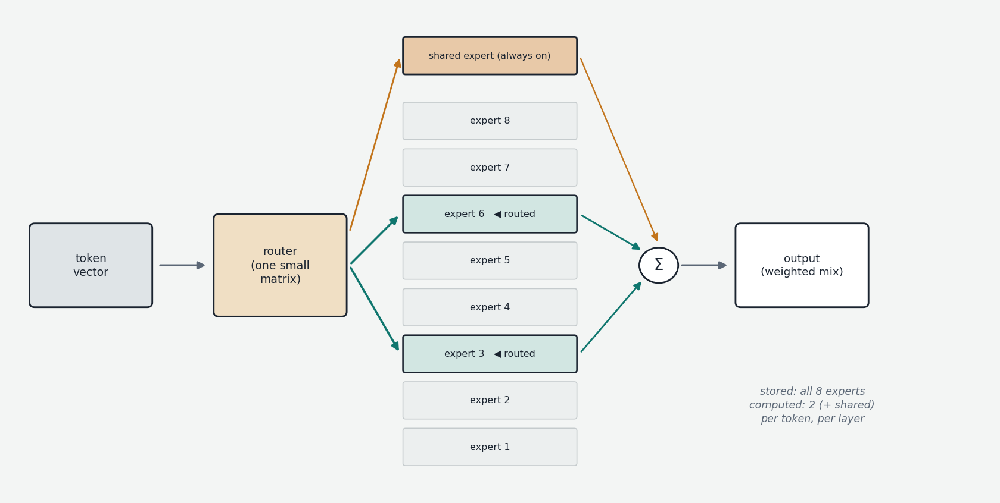
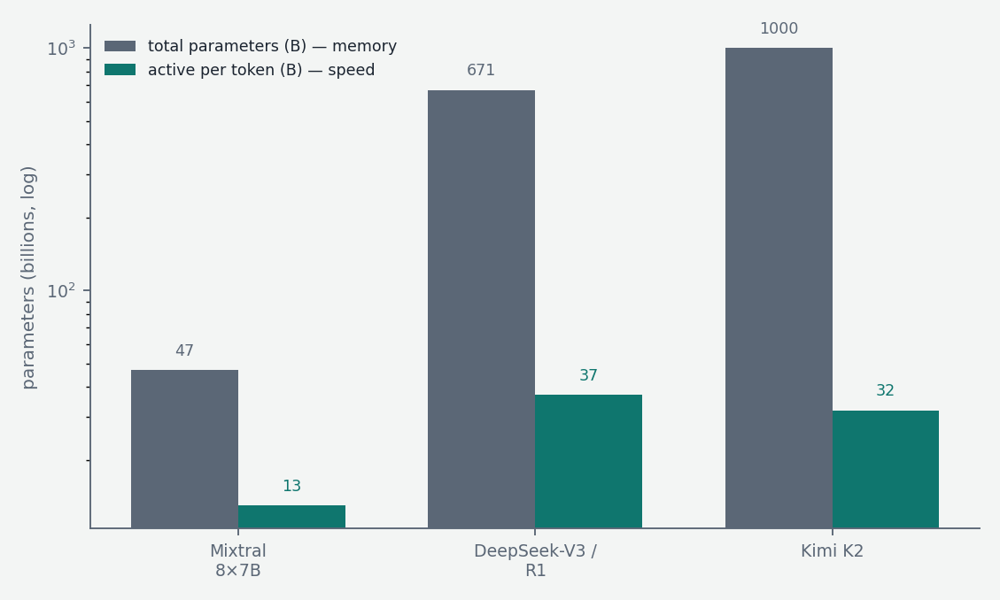

Every architecture description so far has carried an unstated assumption: that the model is dense, meaning every parameter participates in processing every token. That assumption no longer holds for most models at the frontier, nor for the most interesting large open models. DeepSeek-V3 and R1, Mixtral, Llama 4, Qwen3's large variants, Kimi K2, gpt-oss — all are Mixture of Experts (MoE) models, and the distinction between a model's total and active parameters has become essential vocabulary. This chapter explains the design, why it wins, and why it happens to suit local unified-memory hardware unusually well.
The motivating asymmetry
Recall the scaling picture from Chapter 2: more parameters means better loss, but compute cost in a dense model is welded to parameter count — roughly 2 FLOPs per parameter per token at inference, 6 in training. Doubling capability via parameters doubles the cost of every single token forever after.
But there is something obviously wasteful about dense computation. Recall the interpretability picture of MLP blocks from earlier in the conversation: they appear to function as vast key-value memories, with individual neurons firing on specific patterns — Paris-related tokens, past-tense verbs, Python syntax. When the model processes a token of Ruby code, the parameters encoding French geography or Renaissance poetry are multiplied through anyway, contributing approximately nothing. The knowledge must be stored somewhere, but it need not be exercised on every token. The natural idea is conditional computation: keep an enormous store of parameters, but for any given token, activate only the relevant slice. The model's knowledge capacity and its per-token compute cost become independent dials.
The mechanism: experts and routers
The implementation targets the MLP blocks specifically — they hold roughly two-thirds of a dense model's parameters and are where the "stored knowledge" picture applies; attention layers typically remain dense and shared. In each transformer layer, the single MLP is replaced by a set of E parallel MLPs called experts — structurally identical, independently parameterized — plus a small router (or gating network) that decides which experts process each token.

The router is almost embarrassingly simple: a single learned matrix that maps the token's current vector (the residual stream value arriving at that layer) to E scores, one per expert — exactly the same shape of operation as the output projection producing logits over a vocabulary, except the "vocabulary" is the set of experts. The top k scoring experts are selected (k is typically 2 to 8), the token's vector is processed by each of them, and their outputs are combined as a weighted sum using the router's (softmaxed) scores as weights. Every other expert in that layer is simply not computed for that token. Routing is per-token and per-layer: the same token consults different experts at different depths, and adjacent tokens in the same sentence routinely take different paths.
The accounting that follows is the key vocabulary of the modern model landscape. Mixtral 8×7B (the late-2023 release that mainstreamed the architecture in open weights) has 8 experts per layer with 2 active: about 47 billion total parameters, about 13 billion active per token — the storage of a 47B model at the per-token compute of a 13B one. DeepSeek-V3 pushed the design much further: 671 billion total parameters, only 37 billion active, achieved with fine-grained experts — 256 small experts per layer with 8 routed active, plus one shared expert that processes every token unconditionally (the insight being that genuinely common processing shouldn't be duplicated across specialized experts, so give it a dedicated always-on path, freeing the routed experts to specialize harder). Kimi K2 extended the same recipe to a trillion total parameters with ~32 billion active. The consistent empirical finding underneath all of this: at matched training compute, an MoE model achieves meaningfully better loss than a dense one — the sparse parameters are not as good as dense ones parameter-for-parameter (a 671B/37B MoE is far from a dense 671B in quality), but they are much better than nothing, and they are nearly free at inference time. Free, that is, in compute. Not in memory.
Training complications
MoE training adds genuine difficulties over dense training, which is why the design took years to mature after its modern introduction (Shazeer et al., 2017).
The central one is load balancing. Left alone, routing collapses: early in training some experts receive slightly more tokens by chance, therefore train slightly more, therefore score slightly higher with the router, therefore receive more tokens — a rich-get-richer spiral ending with a few overworked experts and many dead ones, wasting most of the parameter budget. The classical fix is an auxiliary loss added to the training objective that penalizes uneven expert utilization, pressuring the router toward balance — at some cost, since the balancing pressure fights the quality-maximizing routing. DeepSeek-V3 introduced a cleaner auxiliary-loss-free method: a per-expert bias term, adjusted outside of gradient descent, nudged up for underused experts and down for overused ones, achieving balance without distorting the main objective. Routing is also inherently jumpy — top-k selection is a discontinuous operation, so a token near a routing boundary can flip experts between training steps — which contributes to MoE training's reputation for instability and sensitivity to hyperparameters.
There is also a systems dimension: in distributed training, experts are spread across devices (expert parallelism, completing the parallelism taxonomy from Chapter 2), so every layer requires an all-to-all network exchange shipping each token's vector to wherever its chosen experts live and back. Token-dependent communication patterns are harder to schedule than the static patterns of dense training.
One curiosity worth flagging because everyone asks: the experts do not specialize the way the name suggests. Analyses consistently find no clean "math expert" or "French expert." Specialization is real but operates at the level of token-types and shallow patterns — particular punctuation, syntactic positions, code symbols — and varies by layer. The router learns whatever partition of the input space minimizes loss, and that partition does not respect human subject boundaries. "Experts" is evocative branding for what is really learned sharding of the MLP memory.
Inference: the memory-compute trade, and why local hardware likes it
The inference profile of MoE is the mirror image of its training advantage, and understanding it requires one fact from Chapter 6 in advance: generating a token in a decode loop is memory-bandwidth bound — its speed is set by how many bytes of weights must be read from memory per token, not by arithmetic.

An MoE model must hold all experts resident in memory, because routing decisions arrive token by token and any expert may be needed at any moment — there is no useful way to keep only "the relevant" experts loaded. So the memory footprint is set by total parameters: DeepSeek-V3 at 4-bit quantization needs on the order of 350–400 GB just for weights. But the per-token work — both the FLOPs and, crucially, the bytes of weights actually read — is set by active parameters: those same tokens each touch only ~37B parameters' worth of weights, roughly 20 GB at 4-bit. The result is a strange and specific hardware appetite: enormous memory capacity, only moderate compute and bandwidth.
That appetite is a poor match for classic GPUs (small pools of very fast memory) and an excellent match for unified-memory machines — Apple Silicon Macs with up to 512 GB of shared memory, NVIDIA's DGX Spark with 128 GB, AMD's Strix Halo — which offer exactly the inverted profile: lots of capacity, modest bandwidth. A dense 400B model on such a machine would be unusably slow (every token must read all 400B parameters' worth of bytes through the limited bandwidth). A 400B-total/37B-active MoE on the same machine generates tokens at roughly the speed of a 37B dense model while bringing the knowledge of something far larger. This is precisely why the strongest models that are practical to run on a Spark-class or Mac-class setup — DeepSeek's V3/R1 family, Qwen3-235B-A22B, gpt-oss-120B, Llama 4 — are all MoE: the architecture converts the one resource such machines have in abundance (capacity) into quality, while economizing the resource they lack (bandwidth). The same logic drives clusters of such machines (Thunderbolt- or RDMA-linked Macs and Sparks running EXO-style sharding): MoE makes aggregate memory the useful quantity to pool.
The fine print: per-token expert selection varies, so weight reads are scattered rather than perfectly streamed, batching helps less than with dense models (different sequences want different experts), and prompt processing still exercises broad swaths of the expert set. The headline arithmetic — memory of the total, speed of the active — survives all of it as the correct first-order model.
The picture to keep
Mixture of Experts decouples what dense transformers weld together: knowledge capacity and per-token cost. Each MLP becomes a population of parallel experts fronted by a trivially simple learned router that picks a few per token per layer; training requires keeping the experts evenly employed; and the result is a model described by two numbers instead of one — total parameters (what you must store, and roughly what you know) and active parameters (what each token costs, and roughly how fast you run). It is the reason a trillion-parameter open model is a thing that exists, the reason frontier economics work at all, and the reason the most capable locally-runnable models map so neatly onto big-memory, modest-bandwidth hardware.